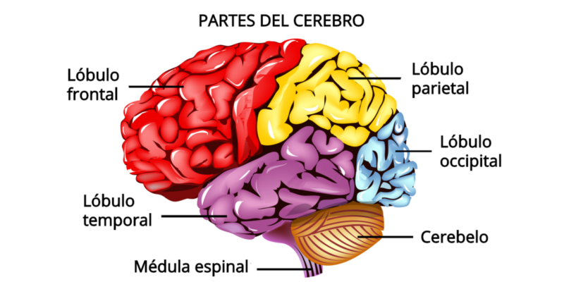

El lóbulo frontal es responsable de la planificación, la toma de decisiones, el control motor voluntario, el razonamiento y el comportamiento social. Es clave para las funciones ejecutivas y la organización de la conducta.